Acordei na casa da minha família emprestada em Colonia del Sacramento, sentindo o cheiro do café da manhã. Ficamos conversando um pouco, e tentei esclarecer ao máximo as dúvidas e curiosidades que meus anfitriões tinham sobre a vida no Brasil e particularidades do Rio de Janeiro e do bairro onde moro atualmente. Também aprendi bastante sobre o modo de vida no Uruguai, sua economia, festas típicas e outras coisas. Muito bom essa troca cultural.
Depois do café, saí com Israel para mais uma volta de moto pela cidade. Como ele estava muito curioso com relação à Tenere 250, ofereci que ele fosse com ela, e eu iria em sua Fazer 250. Ele explicou que a Tenere 250 lá no Uruguai não é valorizada, e por isso só tinha visto uma rodando até então, mas que ele queria muito comprar uma, e não fosse o baixo valor de revenda já o teria feito.
E assim foi, trocamos de moto. Ele ficou bem animado em pilotar a Ténéré. Eu pilotando a Fazer parecia um urso de circo em cima daquelas bicicletinhas hahaha.
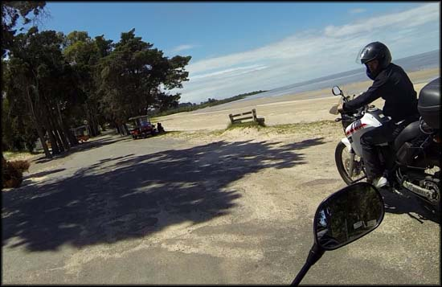Test drive uruguaio na Monstrinha, em uma praia em Colonia
Tinha falado que queria rodar por alguns dos mesmos lugares do dia anterior, para poder fazer imagens com a câmera que esqueci, e fomos. De novo passamos por toda a orla, fomos a alguns pontos, e esticamos até um pedaço que não tinha ido no dia anterior, alguns visuais diferentes. Demos várias voltas na parte residencial da cidade, com casas legais e um estilo de arquitetura bem bacana.

Um lago em Colonia, acessível por estradas de chão somente
Quando deu meio dia fomos até a faculdade da cidade, para buscarmos a noiva de Israel. Era aniversário dela, e chegou mais um casal de amigos deles, em outra moto.
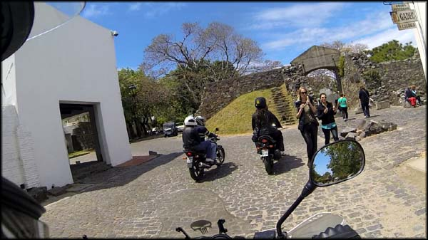Mais um passeio pelo centro histórico, dessa vez tinha mais turistas
Rodamos mais um pouco pelo centro histórico, e por volta de 13:00 voltamos para casa, os pais de Israel tinham providenciado um almoço-lanche com deliciosas pizzas e salgados. Tinha tempo que eu não comia uma pizza boa, gosto muito, e estava frustrado com a que comi em Cambará do Sul/RS. Matou a vontade!
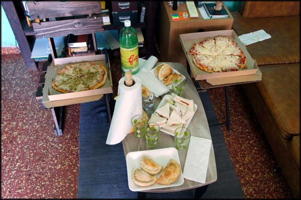Pizza e salgados para almoço leve, saborosos
Às 14:00 eu já tinha me preparado e amarrado a bagagem na motoca, pé na estrada. Israel e sua noiva, pegaram a mesma Ruta 1 que eu. Eles iriam para a casa dela celebrar o cumpleaños (aniversário, como demorei a entender o que significava essa palavra rs) com um assado.
Me despedi de toda a família que me recebeu tão bem em Colonia del Sacramento, e já parti com vontade de voltar algum dia.
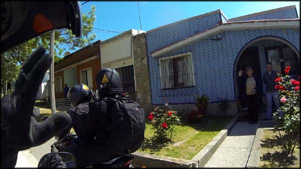Até breve, obrigado pela hospitalidade!
Rodamos uns 20Km e nos despedimos na estrada, ficando o convite para que eles fizessem essa aventura ao contrário, indo até o Rio de Janeiro.
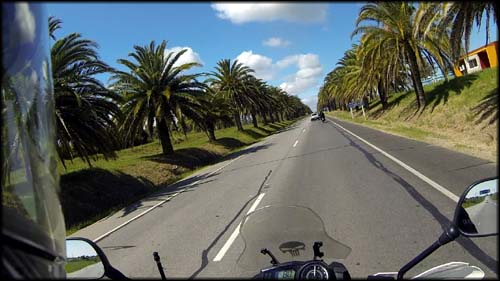Indo embora de Colonia del Sacramento, um dia volto...
Segui direto pela Ruta 1 até Montevidéu, e já sabia onde ficaria hospedado. É que meu anfitrião disse que Montevidéu era uma cidade grande, que havia perigos, inclusive roubos de motos, e o trânsito era intenso. Assim ele gentilmente telefonou para alguns hostels que vimos na internet, e reservou um quarto no Punto Berro Hostel, que fica no bairro Pocitos, bem pertinho da rambla, e onde ele achou que eu ficaria mais seguro.
A estrada até a capital era quase uma reta só, pouquíssimas curvas. Os ventos fortes seguravam um pouco a velocidade, mas a viagem em si estava agradável, e o sol ajudava a suportar o frio.
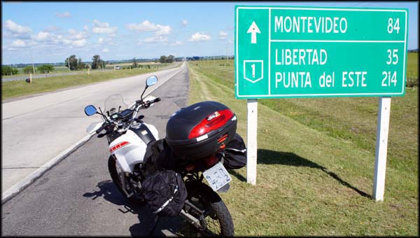Ruta 1 para Montevidéu, pista boa e muitas retas
O deslocamento em si de Colonia del Sacramento até Montevidéu foi até um pouco monótono. Asfalto bom, pista dupla com acostamento, não precisei ficar preocupado com veículos em ultrapassagens. Essas retas enormes, aliás, muito comum por lá e no Sul do BR, fizeram com que o pneu da moto ficasse completamente quadrado no final da viagem, já que pouco fazia curvas deitando.
Chegando na entrada de Montevidéu fiquei um pouco apreensivo com o alerta da cidade ser “perigosa” e os motoristas “dirigirem muito rápido”. Que nada, tudo muito tranquilo, os motoristas eram lentos, isso sim. Não me senti em perigo em momento algum. Eu moro em uma cidade bem mais inóspita e violenta, Montevidéu se mostrava para mim como uma cidade de interior. Pelo ao menos foi assim naqueles dias que lá ficaria.
O GPS do celular não ajudou muito quando cheguei no bairro de Pocitos, me perdi, passei da rua... e no fim me achei, como de praxe, ainda bem. Chegando no hostel Punto Berro, fui muito bem atendido pelo recepcionista Juan, que me mostrou o quarto, onde ficava o banheiro (o quarto era privado, mas o banheiro coletivo), e abriu a garagem para guardar a moto.
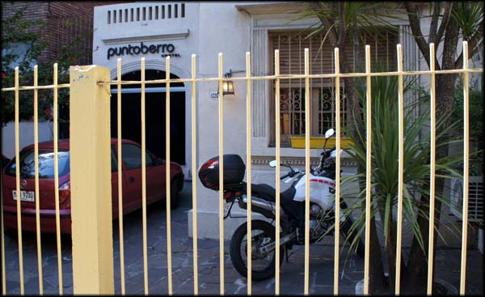Fachada do Hostel Punto Berro, a motoca ficou em segurança
Gostei muito das instalações, os banheiro coletivos são a maioria amplos e limpos. Na parte térrea da grande casa onde funciona o hostel, tem uma sala de TV (felizmente ignorada pela maioria), uma grande cozinha bem aparelhada e uma sala de estar, além de um quintal bacana com churrasqueira e gramado. Paguei 40 dólares pela diária, com café da manhã incluído.
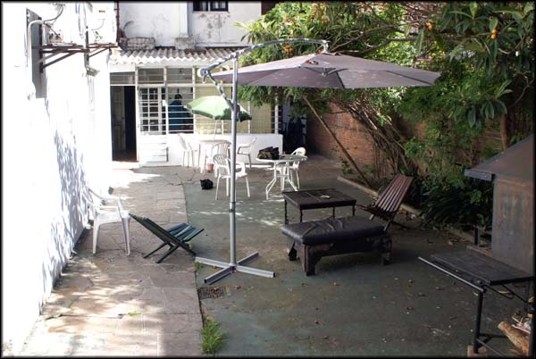Área de lazer do hostel, onde fazem festas com churrasco. Pena que não teve enquanto eu estava por lá...
O quarto em si era bem amplo e limpo, gostei muito. Os quartos não são divididos por números, mas sim por nomes, a maioria de cores, e decorados de forma pertinente. Fiquei no quarto vermelho.
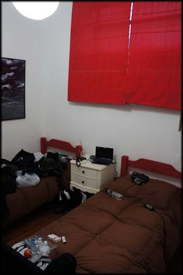la habitación roja
Me cheguei na sala de convivência, e um cara fazia uma comida doida na cozinha, pareceu-me um ensopado de carne improvisado. E enquanto cozinhava, conversava com outro rapaz, que estava usando um notebook. Cumprimentei-os. Um era da Inglaterra e iria embora na manhã seguinte, e já tinha conhecido a parte do Uruguai para onde eu iria nos próximos dias E no dia seguinte ele iria embora para conhecer os lugares pelos quais eu já tinha passado. Trocamos umas dicas.
Dicas estas valiosas, ele me convenceu que valeria a pena conhecer Cabo Polonio, depois que eu me mostrei preocupado com o tempo de viagem. Depois eu descobriria que, realmente, ter perdido essa parte da viagem seria um desperdício.
O outro hóspede era da Irlanda, e estava hospedado lá no hostel há cinco meses! Perguntei porque não alugou um apartamento, afinal para ficar tanto tempo... mas ele me convenceu argumentando que viver no hostel lhe propiciava conhecer sempre gente diferente, e que lá ele tinha toda a estrutura que precisava. Ganhava dinheiro dando aulas de inglês na cidade. Achei bacana, bem desprendido. Pelo que compreendi ele pagava mil pesos uruguaios por mês para morar lá.
Revelou ainda que o sonho dele era morar no Brasil, mais especificamente em Florianópolis, e conhecer o Rio de Janeiro e trabalhar na Copa do Mundo em 2014. Batemos um papo por lá, pude experimentar as cervezas Patrícia e Zillertal, e fui tomar banho para procurar o que fazer à noite.
Havia um pub que eles me recomendaram ai perto, mas o hostel estava vazio e não havia ninguém para ir comigo, fiquei indeciso sobre o que fazer. Então procurei no Couchsurfing de novo, atrás de alguém de Montevidéu a fim de beber uma cerveja. Só bem depois tive uma resposta, uma menina que disse que nem iria sair naquela noite, mas que viu que tínhamos um amigo em comum, da época em que ela morou no Brasil.
Marcamos em um bar que ficava a sete quarteirões de onde eu estava, e fui a pé. Cheguei no bar, um clima bem bacana, certamente não é lugar de turistas, só tinha gente local, se chama La Esquina del Mundo. Procurei pela minha companhia, mas ela não havia chegado. Me sentei em uma mesa para aguardar, bebendo uma cerveja Miller (só tinha essa).
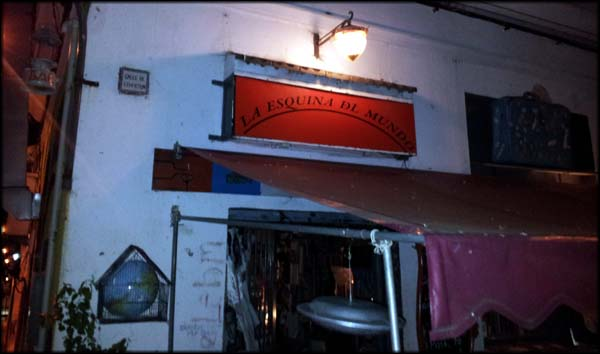Esquina del Mundo, bar bacana e comida legal
Enfim minha nova amiga chegou. Se chama Mabel e estava de bicicleta. Trocamos várias ideias, ela me explicou muitas coisas sobre o país, pediu uma comida típica da Armênia chamada Lehmeyún, a qual achei muito boa. Depois fomos para outro bar, já próximo ao Estádio Centenário.
O bar se chamava Molee, e é uma espécie de pré-balada da garotada de Montevidéu, pelo que entendi. Pessoal bem mais jovem, mas um clima legal, só que já esvaziando e iria encerrar o expediente em pouco tempo. Com dificuldades fomos (mal) atendidos pela jovem garçonete, que logo avisou que a cozinha iria fechar, e se quiséssemos comer algo tinha que pedir logo. Pedimos um entrecort com fritas, que estava muito bom, e bebemos uma Zillertal.
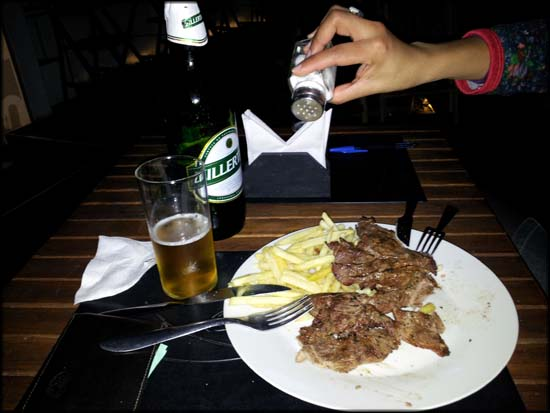Cerveja boa, comida boa, atendimento ruim. Não se vence todas.
Batemos muito papo, em português. Ela desenhou um mapa rústico em um guardanapo, indicando onde ficava cada lugar interessante e que valeria a pena visitar em Montevidéu. Me explicou bastante sobre a vida e a economia da cidade.
Mabel viveu um bom tempo no Brasil, fazendo faculdade em Porto Alegre, onde ficou amiga de uma menina. E essa menina hoje mora no Rio e é casada com um grande amigo meu. Muita coincidência.
Já estava tarde, e ela tinha que ir embora. E eu já apresentava os sinais de cansaço da viagem acumulada, com poucas horas de sono, além de ter uma bela caminhada de volta ao hostel.
Antes de partirmos, pedi a uma menina que estava em pé para tirar uma foto nossa, e tinha um cara já bem bêbado fazendo palhaçada com uma caixa de pizza furada em forma de máscara. Ele ficou brincando que iria aparecer na foto, e eu o chamei para a participação especial, que figura.
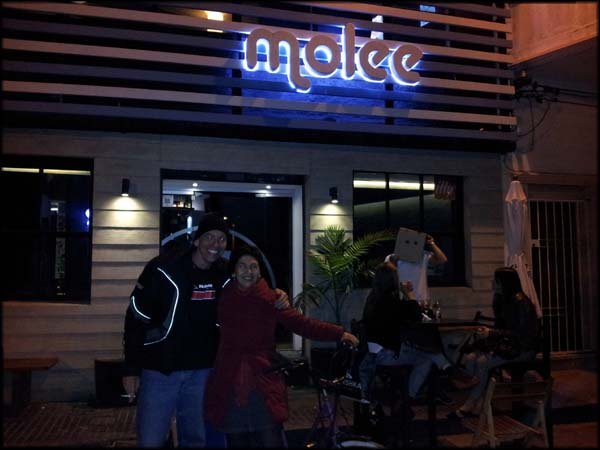Eu, Mabel e o Cabeça de Pizza em frente ao Molee
Nos despedimos, agradeci as dicas de lugares para conhecer no dia seguinte, e iniciei meu passeio a pé pela madrugada, tentando achar o caminho de volta. Obviamente, ainda mais agora com umas cervejas na cabeça, me perdi. Tive que olhar no mapa do celular até achar a rota que eu tinha que pegar, porque quando mudamos de bar fomos a pé conversando e não me liguei no caminho. Até a pé estava precisando usar GPS, cruzes.
Foi uma oportunidade de conhecer a noite daquela área bem residencial. Muitas casas bem velhas, algumas bem cuidadas, outras com reboco caindo. Silêncio absoluto, ninguém nas ruas. Não deu medo a ponto de eu achar que corria perigo por estar sozinho ali, de madrugada, um gringo perdido. Mas em alguns pontos tive um certo receio, inclusive desviei de um caminho mais curto porque a rua era mais esquisita rs.
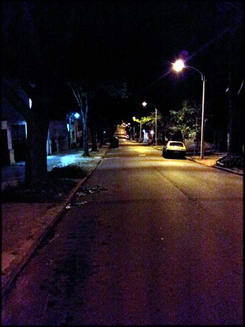Ruas de bairro em Montevidéu, um deserto só, mas parecia seguro...
Cheguei bem de volta ao hostel, já não havia ninguém acordado. Escovei os dentes, lavei o rosto e não tive forças para tomar banho, o clima estava frio e eu estava bêbado. Desabei na cama.
Não tinha conhecido nada da parte turística e histórica de Montevidéu, então resolvi que ficaria mais um dia hospedado lá naquele mesmo hostel. Achei o clima bacana.